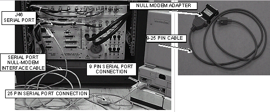
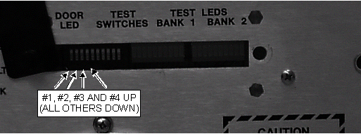

Proprietary to General Electric Company
Direction 5440000, Rev# 5
Signa HDxt Service Methods
Module Version 2.0, Version Date 6/3/10
Proprietary to General Electric Company |
| Required Persons | Preliminary Reqs | Procedure | Finalization |
|---|---|---|---|
| 1 |
The power monitor should be checked to verify that it is set to either 1.5T or 1.0T, depending on the field strength of the system. The default setting for replacement boards is 1.5T.
| Condition | Reference | Effectivity |
|---|---|---|
The SSM High Voltage (HV) Board jumper, JP1, must be set to either the 1000V position for 1.5T or 500V position for 1.0T systems. This high voltage bias is for the Body 1 and Body 2 Dynamic Disable Circuits in the RF body coil and the Direct Drive Circuitry (DD) in the body hybrid splitter. Jumper JP1 should come preset for all new installations and should not require changing. If the HV board ever fails, however, and is replaced, the position of this jumper on the new board should be checked before it is installed. | - | - |
Connect the laptop to J46 Serial Port of the SSM via the null-modem serial cable. If the null-modem cable normally shipped with the RF/PDU or SRF cabinet is not available, a standard 9-pin to 25-pin serial cable with a null-modem adapter can be used instead. See Illustration 1.
Illustration 1: LAPTOP CONNECTED TO SSM

Run the program CPD.EXE. See Table 1.
| NOTE: | Only version 2.0 of CPD.EXE is compatible with all MR system types. This is the version available from the , revision 12 and later. |
Table 1: ALTERNATE PROPRIETARY PROCEDURE — LAPTOP SOFTWARE
Start the software diagnostic program CPD.EXE on the laptop.
|
A message that reads, “OOPS no CRC value today XXXX. Press a key.” may be displayed if using the version 2.0 software. This is normal. Press any key to continue.
The main selection screen will be displayed. Note the headline at the top of the screen that reads, “CPD.EXE Rev 2.0 CRC XXXX” where XXXX is some hexidecimal value.
If the hexidecimal value is all zeros then select “E” to exit from the CPD.EXE program and then restart it again.
Verify that status of the hexidecimal value as in the previous step. Failure to verify that the hexidecimal value is not all zeros may result in the program reporting erroneous values.
If the hexidecimal value is not all zeros then continue with the next step.
Select the C) Perform Special Operations menu.
Select G) Change Power Monitor Type.
Type y<ENTER> and type the letter of one of the following power monitor types. See Table 2.
For the RF/PEN II Cabinet:
1.0T Systems, choose C.
1.5T Systems, choose D.
For the RF/PDU Cabinet:
Cabinet with the Solid State TELI RF Amplifiers choose C.
Cabinet with the Solid State ANALOGIC RF Amplifiers choose D.
Table 2: SELECTION: G) CHANGE POWER MONITOR TYPE (1.0T, 1.5T)
| Current Power Monitor Configuration is : 1.5T Do you wish to change it? Y or N Choose one of the following configurations: A) 0.5T B) 0.7T C) 1.0T D) 1.5T |
Press <Esc> twice to exit to DOS. To return to Windows, type exit<ENTER>
Cycle the main breaker power at the SSM by turning CB4 to the OFF position, waiting 15 seconds, then setting CB4 to the ON position. This step saves the changes to the SSM.
Remove the plastic cover on the front of the SSM.
| NOTE: | Place DIP Switch #1 in the UP position last. Order of DIP switch placement is important otherwise system will not recognize changes. |
Place switches 3, 2, 4, and 1 in the Up position. Ensure that all other switches are in the Down position (See Illustration 2). Depending on the current configuration of the Power Monitor LED BANK 1 and LED BANK 2 will each show either LED # 2, LED # 3, or LED # 4 illuminated. LED # 2 illuminated signifies a 1.0T, LED # 3 illuminated signifies a 0.7T, and LED # 4 illuminated signifies a 1.5T Power Monitor. It is not necessary to continue this procedure if the Power Monitor is already correctly configured.
Illustration 2: DIP SWITCH CONFIGURATION FOR SETTING POWER MONITOR TYPE

To set the type to a 1.0T, place switch 5 in the Up position and switch 6 in the Down position.
To set the type to a 1.5T, place switch 5 in the Up position and switch 6 in the Up position.
Place switch #10 in the Up position followed by the Down position. LED BANK 1 and LED BANK 2 will now change to show either LED # 2 (1.0T) or LED # 4 (1.5T) illuminated depending on the new setting of the Power Monitor.
Place switch #1 in the Down position. None of the LEDs in LED BANK 1 and LED BANK 2 should now be illuminated.
Place all other switches in the Down position.
Cycle the main breaker power at the SSM by turning CB4 to the OFF position, waiting 15 seconds, then setting CB4 to the ON position. This step saves the changes to the SSM.
Replace the plastic cover on the front of the SSM.
No finalization steps.